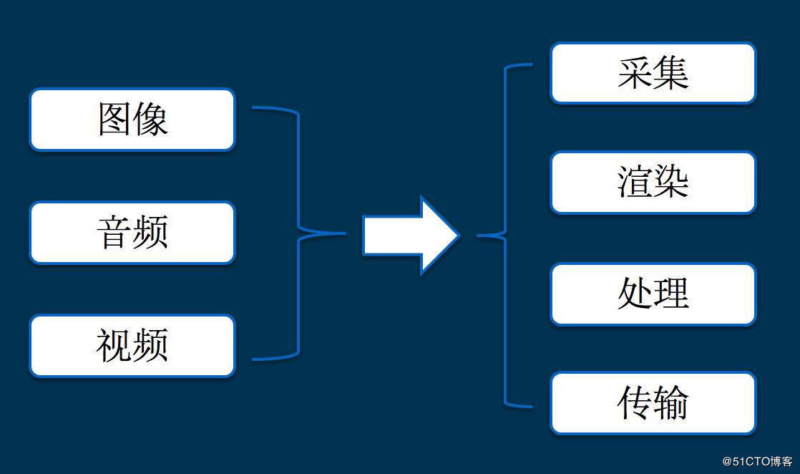
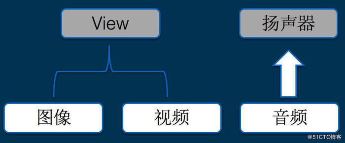
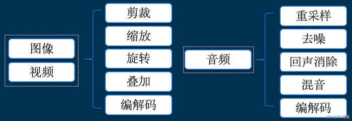

音视频开发
音视频开发，就是要掌握图像、音频、视频的基础知识，并且学会如何对它们进行采集、渲染、处理、传输等一系列的开发和应用。

采集：它解决的是，数据从哪里来的问题
渲染：它解决的是，数据怎么展现的问题
处理：它解决的是，数据怎么加工的问题
传输：它解决的是，数据怎么共享的问题
2.1 采集
图像、视频最初都是来自摄像头，而音频最初都是来自麦克风，因此，做音视频采集，就要掌握如下的技术知识：
Windows：DirectShow
Linux：V4L2
Android：Camera
iOS：AVCaptureSession
系统的摄像头采集的参数怎么配置，都是什么含义 ？
比如：分辨率、帧率、预览方向、对焦、闪光灯 等
系统的摄像头输出的图像/视频数据，是什么格式，不同格式有什么区别 ？
比如：图片：JPEG，视频数据：NV21，NV12，I420 等
系统的麦克风采集接口是什么，怎么用 ？
比如：
Windows：DirectShow
Linux：ALSA & OSS
Android：AudioRecord
iOS：Audio Unit
系统的麦克风采集参数怎么配置，都是什么含义 ？
比如：采样率，通道号，位宽 等
系统的麦克风输出的音频数据，是什么格式？
比如：PCM
2.2 渲染

其实无论在哪个平台，图像、视频最终都是要绘制到视图上面，而音频最终都是要输出到扬声器，因此，做音视频渲染，就要掌握如下的技术知识：
系统提供了哪些 API 可以绘制一张图片或者一帧 YUV 图像数据的 ？
比如：
Windows：DirectDraw, Direct3D, GDI，OpenGL 等
Linux： GDI， OpenGL 等
Android：ImageView，SurfaceView，TextureView，OpenGL 等
iOS： CoreGraphics，OpenGL 等
系统提供了哪些 API 可以播放一个 mp3 或者 pcm 数据 ？
比如：
Windows：DirectSound 等
Linux：ALSA & OSS 等
Android：AudioTrack 等
iOS： AudioQueue 等
2.3 处理
处理，它解决的是，数据怎么加工的问题，那么，数据究竟可以怎么加工呢 ？
首先，我们看看图像/音视频的数据可以做哪些加工 ？

其实无论在哪个平台，图像和音视频的加工，除了系统的 API，大多数都会依赖一些跨平台的第三方库的，通过掌握这些第三方库的原理和使用方法，基本上就可以满足日常音视频处理工作了，这些库包括但不限于：
图像处理：OpenGL，OpenCV，libyuv，ffmpeg 等
视频编解码：x264，OpenH264，ffmpeg 等
音频处理：speexdsp，ffmpeg 等
4.音频编解码：libfaac，opus，speex，ffmpeg 等
2.4 传输
传输，它解决的是，数据怎么共享的问题，那么，数据究竟怎么共享呢 ？
共享，最重要的一点，就是协议。
因此，研究音视频传输，其实就是在研究协议，具体有哪些协议呢 ？
音视频在传输前，怎么打包的，如：FLV，ts，mpeg4 等
直播推流，有哪些常见的协议，如：RTMP，RSTP 等
直播拉流，有哪些常见的协议，如：RTMP，HLS，HDL，RTSP 等
基于 UDP 的协议有哪些？如：RTP/RTCP，QUIC 等
参见
从开发小白到音视频专家 https://www.jianshu.com/p/63a0100c89c8
从开发小白到音视频专家 https://www.jianshu.com/p/43367f541a2e